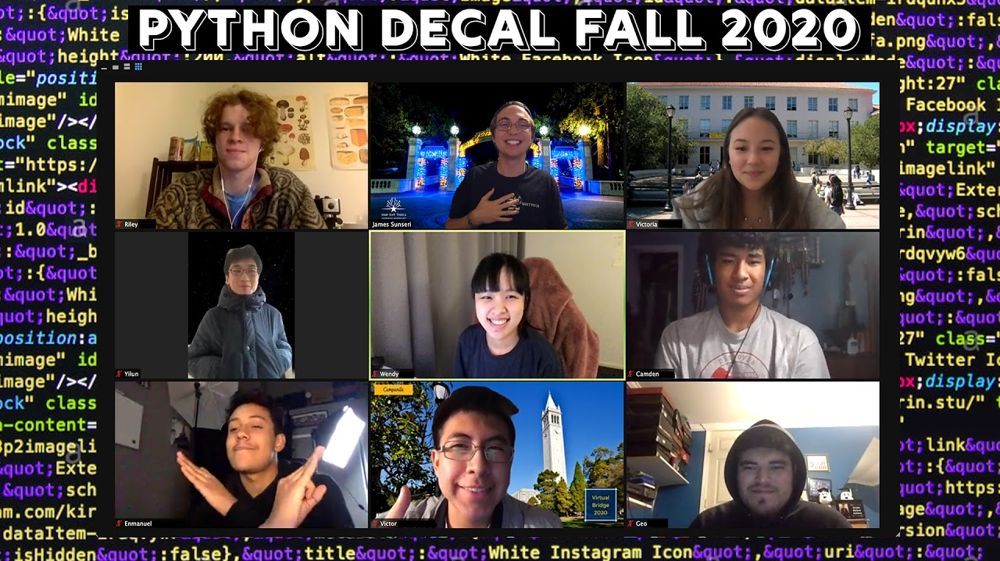
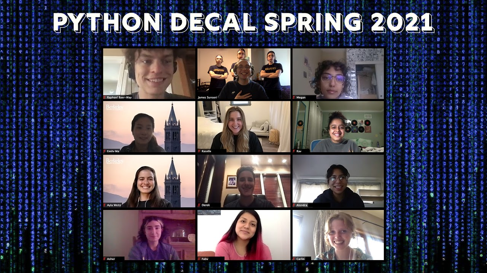
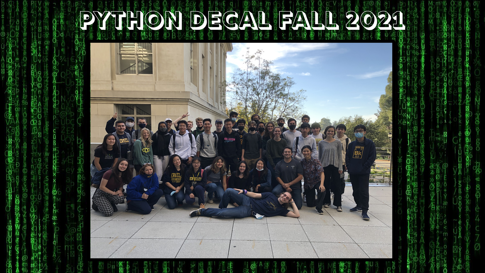
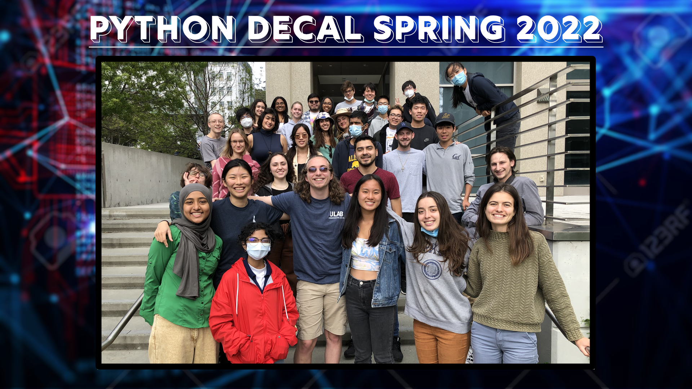

As an undergraduate at UC Berkeley, I have had several opportunities to get involved with
the teaching side of university. In Fall 2020 at Cal I began teaching my course
Introduction to Python for Astronomers (Python DeCal). I have been
the head facilitator for 2 years, effectively building the course from the ground up. I completely rewrote the Curriculum
to better support the needs of astronomy students in the department. The course has seen a massive growth in my time running
the course, starting at merely 7 students we are now averaging close to 70 students per semester. The course has become a
fundamental staple of the astronomy curriculum for students at UC Berkeley. I secured several thousand dollars in funding to support
the course. We have 5 paid course staff and 3 interns per semester to help create homework assignments, give weekly lectures,
grade homework assignments and projects, and host office hours. We include not just programming, but also professional development
in our course. Our main goal is to support students in learning how to program, but we also want students to be prepared to
apply for research positions and job opportunities after they finish our class. Alongside our ambitious python curriculum, we also
teach students how to write a Curriculum Vitae in LaTeX and create a personal website. The entire curriculum is posted on our website
pythondecal.github.io.
Below are our class photos in the time i've been teaching the course. You can see the evolution of our course below.
Class Photos:



